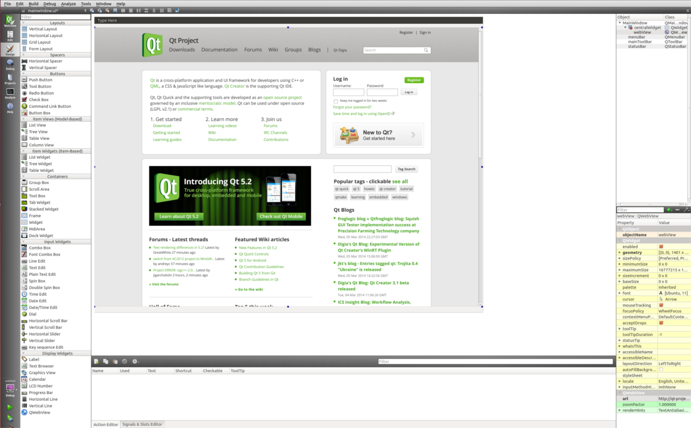
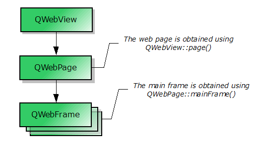

QWebView Class
The QWebView class provides a widget that is used to view and edit web documents. More...
| Header: | #include <QWebView> |
| qmake: | QT += webkitwidgets |
| Since: | Qt 4.4 |
| Inherits: | QWidget |
Properties
|
|
- 59 properties inherited from QWidget
Public Functions
| QWebView(QWidget *parent = Q_NULLPTR) | |
| ~QWebView() | |
| bool | event(QEvent *e) |
| bool | findText(const QString &subString, QWebPage::FindFlags options = QWebPage::FindFlags()) |
| bool | hasSelection() const |
| QWebHistory * | history() const |
| QIcon | icon() const |
| bool | isModified() const |
| void | load(const QUrl &url) |
| void | load(const QNetworkRequest &request, QNetworkAccessManager::Operation operation = QNetworkAccessManager::GetOperation, const QByteArray &body = QByteArray()) |
| QWebPage * | page() const |
| QAction * | pageAction(QWebPage::WebAction action) const |
| QPainter::RenderHints | renderHints() const |
| QString | selectedHtml() const |
| QString | selectedText() const |
| void | setContent(const QByteArray &data, const QString &mimeType = QString(), const QUrl &baseUrl = QUrl()) |
| void | setHtml(const QString &html, const QUrl &baseUrl = QUrl()) |
| void | setPage(QWebPage *page) |
| void | setRenderHint(QPainter::RenderHint hint, bool enabled = true) |
| void | setRenderHints(QPainter::RenderHints hints) |
| void | setTextSizeMultiplier(qreal factor) |
| void | setUrl(const QUrl &url) |
| void | setZoomFactor(qreal factor) |
| QWebSettings * | settings() const |
| qreal | textSizeMultiplier() const |
| QString | title() const |
| void | triggerPageAction(QWebPage::WebAction action, bool checked = false) |
| QUrl | url() const |
| qreal | zoomFactor() const |
Reimplemented Public Functions
| virtual QVariant | inputMethodQuery(Qt::InputMethodQuery property) const |
| virtual QSize | sizeHint() const |
- 216 public functions inherited from QWidget
Public Slots
- 19 public slots inherited from QWidget
Signals
| void | iconChanged() |
| void | linkClicked(const QUrl &url) |
| void | loadFinished(bool ok) |
| void | loadProgress(int progress) |
| void | loadStarted() |
| void | selectionChanged() |
| void | statusBarMessage(const QString &text) |
| void | titleChanged(const QString &title) |
| void | urlChanged(const QUrl &url) |
- 3 signals inherited from QWidget
Protected Functions
| virtual QWebView * | createWindow(QWebPage::WebWindowType type) |
Reimplemented Protected Functions
| virtual void | changeEvent(QEvent *e) |
| virtual void | contextMenuEvent(QContextMenuEvent *ev) |
| virtual void | dragEnterEvent(QDragEnterEvent *ev) |
| virtual void | dragLeaveEvent(QDragLeaveEvent *ev) |
| virtual void | dragMoveEvent(QDragMoveEvent *ev) |
| virtual void | dropEvent(QDropEvent *ev) |
| virtual void | focusInEvent(QFocusEvent *ev) |
| virtual bool | focusNextPrevChild(bool next) |
| virtual void | focusOutEvent(QFocusEvent *ev) |
| virtual void | inputMethodEvent(QInputMethodEvent *e) |
| virtual void | keyPressEvent(QKeyEvent *ev) |
| virtual void | keyReleaseEvent(QKeyEvent *ev) |
| virtual void | mouseDoubleClickEvent(QMouseEvent *ev) |
| virtual void | mouseMoveEvent(QMouseEvent *ev) |
| virtual void | mousePressEvent(QMouseEvent *ev) |
| virtual void | mouseReleaseEvent(QMouseEvent *ev) |
| virtual void | paintEvent(QPaintEvent *ev) |
| virtual void | resizeEvent(QResizeEvent *e) |
| virtual void | wheelEvent(QWheelEvent *ev) |
- 35 protected functions inherited from QWidget
Additional Inherited Members
Detailed Description
The QWebView class provides a widget that is used to view and edit web documents.
QWebView is the main widget component of the Qt WebKit web browsing module. It can be used in various applications to display web content live from the Internet.
The image below shows QWebView previewed in Qt Creator with the Qt Homepage.

A web site can be loaded onto QWebView with the load() function. Like all Qt widgets, the show() function must be invoked in order to display QWebView. The snippet below illustrates this:
QWebView *view = new QWebView(parent);
view->load(QUrl("http://qt.nokia.com/"));
view->show();
Alternatively, setUrl() can also be used to load a web site. If you have the HTML content readily available, you can use setHtml() instead.
The loadStarted() signal is emitted when the view begins loading. The loadProgress() signal, on the other hand, is emitted whenever an element of the web view completes loading, such as an embedded image, a script, etc. Finally, the loadFinished() signal is emitted when the view has loaded completely. It's argument - either true or false - indicates load success or failure.
The page() function returns a pointer to the web page object. See Elements of QWebView for an explanation of how the web page is related to the view. To modify your web view's settings, you can access the QWebSettings object with the settings() function. With QWebSettings, you can change the default fonts, enable or disable features such as JavaScript and plugins.
The title of an HTML document can be accessed with the title() property. Additionally, a web site may also specify an icon, which can be accessed using the icon() property. If the title or the icon changes, the corresponding titleChanged() and iconChanged() signals will be emitted. The textSizeMultiplier() property can be used to change the overall size of the text displayed in the web view.
If you require a custom context menu, you can implement it by reimplementing contextMenuEvent() and populating your QMenu with the actions obtained from pageAction(). More functionality such as reloading the view, copying selected text to the clipboard, or pasting into the view, is also encapsulated within the QAction objects returned by pageAction(). These actions can be programmatically triggered using triggerPageAction(). Alternatively, the actions can be added to a toolbar or a menu directly. QWebView maintains the state of the returned actions but allows modification of action properties such as text or icon.
A QWebView can be printed onto a QPrinter using the print() function. This function is marked as a slot and can be conveniently connected to QPrintPreviewDialog's paintRequested() signal.
If you want to provide support for web sites that allow the user to open new windows, such as pop-up windows, you can subclass QWebView and reimplement the createWindow() function.
Elements of QWebView
QWebView consists of other objects such as QWebFrame and QWebPage. The flowchart below shows these elements are related.

Note: It is possible to use QWebPage and QWebFrame, without using QWebView, if you do not require QWidget attributes. Nevertheless, Qt WebKit depends on QtGui, so you should use a QApplication instead of QCoreApplication.
See also Previewer Example, Tab Browser, Form Extractor Example, and Fancy Browser Example.
Property Documentation
hasSelection : const bool
This property holds whether this page contains selected content or not.
By default, this property is false.
Access functions:
| bool | hasSelection() const |
See also selectionChanged().
icon : const QIcon
This property holds the icon associated with the web page currently viewed
By default, this property contains a null icon.
Access functions:
| QIcon | icon() const |
See also iconChanged() and QWebSettings::iconForUrl().
modified : const bool
This property holds whether the document was modified by the user
Parts of HTML documents can be editable for example through the contenteditable attribute on HTML elements.
By default, this property is false.
Access functions:
| bool | isModified() const |
renderHints : QPainter::RenderHints
This property holds the default render hints for the view
These hints are used to initialize QPainter before painting the Web page.
QPainter::TextAntialiasing and QPainter::SmoothPixmapTransform are enabled by default.
This property was introduced in Qt 4.6.
Access functions:
| QPainter::RenderHints | renderHints() const |
| void | setRenderHints(QPainter::RenderHints hints) |
See also QPainter::renderHints().
selectedHtml : const QString
This property holds the HTML currently selected
By default, this property contains an empty string.
This property was introduced in Qt 4.8.
Access functions:
| QString | selectedHtml() const |
See also findText(), selectionChanged(), and selectedText().
selectedText : const QString
This property holds the text currently selected
By default, this property contains an empty string.
Access functions:
| QString | selectedText() const |
See also findText(), selectionChanged(), and selectedHtml().
title : const QString
This property holds the title of the web page currently viewed
By default, this property contains an empty string.
Access functions:
| QString | title() const |
See also titleChanged().
url : QUrl
This property holds the url of the web page currently viewed
Setting this property clears the view and loads the URL.
By default, this property contains an empty, invalid URL.
Access functions:
| QUrl | url() const |
| void | setUrl(const QUrl &url) |
See also load() and urlChanged().
zoomFactor : qreal
This property holds the zoom factor for the view
This property was introduced in Qt 4.5.
Access functions:
| qreal | zoomFactor() const |
| void | setZoomFactor(qreal factor) |
Member Function Documentation
QWebView::QWebView(QWidget *parent = Q_NULLPTR)
Constructs an empty QWebView with parent parent.
See also load().
QWebView::~QWebView()
Destroys the web view.
[slot] void QWebView::back()
Convenience slot that loads the previous document in the list of documents built by navigating links. Does nothing if there is no previous document.
It is equivalent to
view->page()->triggerPageAction(QWebPage::GoBack);
See also forward() and pageAction().
[virtual protected] void QWebView::changeEvent(QEvent *e)
Reimplemented from QWidget::changeEvent().
[virtual protected] void QWebView::contextMenuEvent(QContextMenuEvent *ev)
Reimplemented from QWidget::contextMenuEvent().
[virtual protected] QWebView *QWebView::createWindow(QWebPage::WebWindowType type)
This function is called from the createWindow() method of the associated QWebPage, each time the page wants to create a new window of the given type. This might be the result, for example, of a JavaScript request to open a document in a new window.
Note: If the createWindow() method of the associated page is reimplemented, this method is not called, unless explicitly done so in the reimplementation.
Note: In the cases when the window creation is being triggered by JavaScript, apart from reimplementing this method application must also set the JavaScriptCanOpenWindows attribute of QWebSettings to true in order for it to get called.
See also QWebPage::createWindow() and QWebPage::acceptNavigationRequest().
[virtual protected] void QWebView::dragEnterEvent(QDragEnterEvent *ev)
Reimplemented from QWidget::dragEnterEvent().
[virtual protected] void QWebView::dragLeaveEvent(QDragLeaveEvent *ev)
Reimplemented from QWidget::dragLeaveEvent().
[virtual protected] void QWebView::dragMoveEvent(QDragMoveEvent *ev)
Reimplemented from QWidget::dragMoveEvent().
[virtual protected] void QWebView::dropEvent(QDropEvent *ev)
Reimplemented from QWidget::dropEvent().
bool QWebView::event(QEvent *e)
bool QWebView::findText(const QString &subString, QWebPage::FindFlags options = QWebPage::FindFlags())
Finds the specified string, subString, in the page, using the given options.
If the HighlightAllOccurrences flag is passed, the function will highlight all occurrences that exist in the page. All subsequent calls will extend the highlight, rather than replace it, with occurrences of the new string.
If the HighlightAllOccurrences flag is not passed, the function will select an occurrence and all subsequent calls will replace the current occurrence with the next one.
To clear the selection, just pass an empty string.
Returns true if subString was found; otherwise returns false.
See also selectedText() and selectionChanged().
[virtual protected] void QWebView::focusInEvent(QFocusEvent *ev)
Reimplemented from QWidget::focusInEvent().
[virtual protected] bool QWebView::focusNextPrevChild(bool next)
Reimplemented from QWidget::focusNextPrevChild().
[virtual protected] void QWebView::focusOutEvent(QFocusEvent *ev)
Reimplemented from QWidget::focusOutEvent().
[slot] void QWebView::forward()
Convenience slot that loads the next document in the list of documents built by navigating links. Does nothing if there is no next document.
It is equivalent to
view->page()->triggerPageAction(QWebPage::GoForward);
See also back() and pageAction().
QWebHistory *QWebView::history() const
Returns a pointer to the view's history of navigated web pages.
It is equivalent to
view->page()->history();
[signal] void QWebView::iconChanged()
This signal is emitted whenever the icon of the page is loaded or changes.
In order for icons to be loaded, you will need to set an icon database path using QWebSettings::setIconDatabasePath().
See also icon() and QWebSettings::setIconDatabasePath().
[virtual protected] void QWebView::inputMethodEvent(QInputMethodEvent *e)
Reimplemented from QWidget::inputMethodEvent().
[virtual] QVariant QWebView::inputMethodQuery(Qt::InputMethodQuery property) const
Reimplemented from QWidget::inputMethodQuery().
[virtual protected] void QWebView::keyPressEvent(QKeyEvent *ev)
Reimplemented from QWidget::keyPressEvent().
[virtual protected] void QWebView::keyReleaseEvent(QKeyEvent *ev)
Reimplemented from QWidget::keyReleaseEvent().
[signal] void QWebView::linkClicked(const QUrl &url)
This signal is emitted whenever the user clicks on a link and the page's linkDelegationPolicy property is set to delegate the link handling for the specified url.
See also QWebPage::linkDelegationPolicy().
void QWebView::load(const QUrl &url)
Loads the specified url and displays it.
Note: The view remains the same until enough data has arrived to display the new url.
See also setUrl(), url(), urlChanged(), and QUrl::fromUserInput().
void QWebView::load(const QNetworkRequest &request, QNetworkAccessManager::Operation operation = QNetworkAccessManager::GetOperation, const QByteArray &body = QByteArray())
Loads a network request, request, using the method specified in operation.
body is optional and is only used for POST operations.
Note: The view remains the same until enough data has arrived to display the new url.
See also url() and urlChanged().
[signal] void QWebView::loadFinished(bool ok)
This signal is emitted when a load of the page is finished. ok will indicate whether the load was successful or any error occurred.
See also loadStarted().
[signal] void QWebView::loadProgress(int progress)
This signal is emitted every time an element in the web page completes loading and the overall loading progress advances.
This signal tracks the progress of all child frames.
The current value is provided by progress and scales from 0 to 100, which is the default range of QProgressBar.
See also loadStarted() and loadFinished().
[signal] void QWebView::loadStarted()
This signal is emitted when a new load of the page is started.
See also loadProgress() and loadFinished().
[virtual protected] void QWebView::mouseDoubleClickEvent(QMouseEvent *ev)
Reimplemented from QWidget::mouseDoubleClickEvent().
[virtual protected] void QWebView::mouseMoveEvent(QMouseEvent *ev)
Reimplemented from QWidget::mouseMoveEvent().
[virtual protected] void QWebView::mousePressEvent(QMouseEvent *ev)
Reimplemented from QWidget::mousePressEvent().
[virtual protected] void QWebView::mouseReleaseEvent(QMouseEvent *ev)
Reimplemented from QWidget::mouseReleaseEvent().
QWebPage *QWebView::page() const
Returns a pointer to the underlying web page.
See also setPage().
QAction *QWebView::pageAction(QWebPage::WebAction action) const
Returns a pointer to a QAction that encapsulates the specified web action action.
[virtual protected] void QWebView::paintEvent(QPaintEvent *ev)
Reimplemented from QWidget::paintEvent().
[slot] void QWebView::print(QPrinter *printer) const
Prints the main frame to the given printer.
See also QWebFrame::print() and QPrintPreviewDialog.
[slot] void QWebView::reload()
Reloads the current document.
See also stop(), pageAction(), and loadStarted().
QPainter::RenderHints QWebView::renderHints() const
Returns the render hints used by the view to render content.
This function was introduced in Qt 4.6.
Note: Getter function for property renderHints.
See also setRenderHints() and QPainter::renderHints().
[virtual protected] void QWebView::resizeEvent(QResizeEvent *e)
Reimplemented from QWidget::resizeEvent().
[signal] void QWebView::selectionChanged()
This signal is emitted whenever the selection changes.
See also selectedText().
void QWebView::setContent(const QByteArray &data, const QString &mimeType = QString(), const QUrl &baseUrl = QUrl())
Sets the content of the web view to the specified content data. If the mimeType argument is empty it is currently assumed that the content is HTML but in future versions we may introduce auto-detection.
External objects referenced in the content are located relative to baseUrl.
The data is loaded immediately; external objects are loaded asynchronously.
See also load(), setHtml(), and QWebFrame::toHtml().
void QWebView::setHtml(const QString &html, const QUrl &baseUrl = QUrl())
Sets the content of the web view to the specified html.
External objects such as stylesheets or images referenced in the HTML document are located relative to baseUrl.
The html is loaded immediately; external objects are loaded asynchronously.
When using this method, WebKit assumes that external resources such as JavaScript programs or style sheets are encoded in UTF-8 unless otherwise specified. For example, the encoding of an external script can be specified through the charset attribute of the HTML script tag. Alternatively, the encoding can also be specified by the web server.
This is a convenience function equivalent to setContent(html, "text/html", baseUrl).
Warning: This function works only for HTML, for other mime types (i.e. XHTML, SVG) setContent() should be used instead.
See also load(), setContent(), QWebFrame::toHtml(), and QWebFrame::setContent().
void QWebView::setPage(QWebPage *page)
Makes page the new web page of the web view.
The parent QObject of the provided page remains the owner of the object. If the current page is a child of the web view, it will be deleted.
See also page().
void QWebView::setRenderHint(QPainter::RenderHint hint, bool enabled = true)
If enabled is true, enables the specified render hint; otherwise disables it.
This function was introduced in Qt 4.6.
See also renderHints and QPainter::renderHints().
void QWebView::setRenderHints(QPainter::RenderHints hints)
Sets the render hints used by the view to the specified hints.
This function was introduced in Qt 4.6.
Note: Setter function for property renderHints.
See also renderHints() and QPainter::setRenderHints().
void QWebView::setTextSizeMultiplier(qreal factor)
Sets the value of the multiplier used to scale the text in a Web page to the factor specified.
See also textSizeMultiplier().
QWebSettings *QWebView::settings() const
Returns a pointer to the view/page specific settings object.
It is equivalent to
view->page()->settings();
See also QWebSettings::globalSettings().
[virtual] QSize QWebView::sizeHint() const
Reimplemented from QWidget::sizeHint().
[signal] void QWebView::statusBarMessage(const QString &text)
This signal is emitted when the status bar text is changed by the page.
[slot] void QWebView::stop()
Convenience slot that stops loading the document.
It is equivalent to
view->page()->triggerPageAction(QWebPage::Stop);
See also reload(), pageAction(), and loadFinished().
qreal QWebView::textSizeMultiplier() const
Returns the value of the multiplier used to scale the text in a Web page.
See also setTextSizeMultiplier().
[signal] void QWebView::titleChanged(const QString &title)
This signal is emitted whenever the title of the main frame changes.
See also title().
void QWebView::triggerPageAction(QWebPage::WebAction action, bool checked = false)
Triggers the specified action. If it is a checkable action the specified checked state is assumed.
The following example triggers the copy action and therefore copies any selected text to the clipboard.
view->triggerAction(QWebPage::Copy);
See also pageAction().
[signal] void QWebView::urlChanged(const QUrl &url)
This signal is emitted when the url of the view changes.
[virtual protected] void QWebView::wheelEvent(QWheelEvent *ev)
Reimplemented from QWidget::wheelEvent().